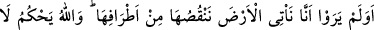
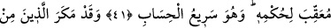
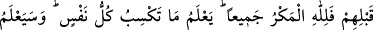
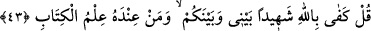

ALLAH’IN HÜKMÜNÜ
BOZACAK KİMSE YOKTUR
41. Bizim, yeryüzüne gelip onu uçlarından eksilttiğimizi görmediler mi? Allah
(dilediği gibi) hükmeder, O’nun hükmünü bozacak kimse yoktur. Ve O hesabı
çabuk görendir.
42. Onlardan öncekiler de (peygamberlerine) tuzak kurmuşlardı; halbuki bütün
tuzaklar Allah’a aittir. Çünkü O, herkesin ne kazandığını bilir. kâfirler de bu
yurdun (dünyanın) sonunun kimin olduğunu yakında bileceklerdir.
43. Kâfir olanlar: “Sen rasûl olarak gönderilmiş bir kimse değilsin.” diyorlar. De
ki: “Benimle sizin aranızda şâhid olarak Allah ve yanında Kitab’ın bilgisi olan
(peygamber) yeter.”
Sanki kâfirler: “Rabbinin sana göstermeyi vaadettiği şey nerede?!” diye sormuşlar,
bunun üzerine Allah Teâlâ şöyle buyurmuştur: “Bizim” emrimizin “yeryüzüne”
kâfirlerin yurduna “gelip onu uçlarından eksilttiğimizi görmediler mi?” Yani,
müşriklerin yurtlarını Muhammed (s.a.) ve O’na inananlar vasıtasıyla fethettiğimizi
görmediler mi? Müslümanların müşriklerin yurtlarını istîlâ etmesi sâyesinde İslâm
yurdunun genişlemesi kâfir yurtlarının eksilmesi demektir. Allah Teâlâ kâfir yurtlarından
bir bölümünü müslümanlara vermeye kâdir olduğuna göre tamamını da verebilir. Onlar
hâlâ ibret almayacaklar mı?
“Allah (dilediği gibi) hükmeder, O’nun hükmünü bozacak kimse yoktur.” Yani,
hiçbir karşı çıkanı ve nakzedeni olmaksızın hükmü geçerli olacak şekilde hüküm verir.
Allah, İslâm’ın galip geleceği, izzet ve ikbâle ereceğine, küfrün ise geri çekilip
çökeceğine hükmetmiştir. Bu hüküm kesinlikle vukû bulacaktır, değişmesi mümkün
değildir.
“Ve O, hesâbı çabuk görendir.” Onları dünyadaki öldürülme ve sürülmeden hemen
sonra âhirette de hesâba çekecektir.
Fakir (Bursevî) der ki: Kâfir yurdunun eksilmesi ancak cihâd emrine bağlı olan